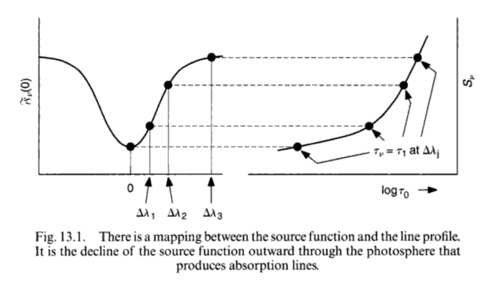
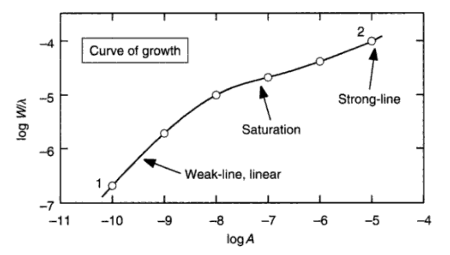

第十三章：谱线的行为¶
Image credit: Jonathan Walker.
我们在归一化光谱下面讨论。
谱线的转移方程¶
主要参考第七章的东西。大气连续谱上有吸收和发射，那么谱线也有。
令\($ l_\nu $\)为谱线吸收系数，\($ j^l_\nu $\)为谱线发射系数；对于连续谱这两个量是\($ \kappa_\nu, j^c_\nu $\)。那么对于式子\($ (7.1) $\)，我们还有同样的形式：
只是这时候光深\($ S_\nu $\)包含了谱线和连续谱的部分，变成了\($ \frac{j^l_\nu + j^c_\nu}{l_\nu + \kappa_\nu} $\)。同样光深也要包含谱线的贡献：\($ d\tau_\nu = (l_\nu + \kappa_\nu) \rho dx $\)。
因为光深还是\($ S_\nu $\)，所以大气辐射转移的基本式子\($ (7.4), (7.9) $\)以及它们有关恒星表面的推论\($(7.10), (7.15) $\)仍然成立，就不抄过来了。
如此这般，这般如此，我们的主要任务还是回到了如何求新的源函数上。
谱线的源函数¶
我们先定性的看谱线形成的深度。利用灰大气假设，我们有
形式和\($ (7.34) $\)是完全一样的，只不过虽然连续谱和波长无关，谱线却和波长有关，所以\($ \nu $\)的下标回来了。这个式子告诉我们光深越大的时候源函数越大（大气底层发射更多嘛），同时\($ F_\nu(0) $\)也与光深成正比。这就说明了谱线中心所对应的光深比较小，形成场所在大气较上层；而谱线的边缘所对应的光深比较大，形成场所在大气较下层。

当然这个只是定性的分析，实际定量的要这么做：
我们引入谱线的发射和吸收轮廓\($ \psi(\nu), \phi(\nu) $\)，并且加在\($ (5.16), (5.17) $\)上面：
所以源函数就是
把\($ (6.8) $\)拿过来消掉所有的AABB：
这就是non-LTE下的源函数。
如果在LTE下并且有细致平衡原理的话，吸收发射轮廓相等并且有\($ (1.17) $\)，则
就比较简单了。
[2018.9] LTE的东西当然比较好用，不过最近在华沙的一个Gaia Workshop里面Maria Bergermann把LTE批判了一番，说nLTE对于元素丰度确定来说很重要。
[2019.6] 天可怜见我现在也开始搞nLTE啦….
nLTE下的源函数¶
假设我们已知发射/吸收轮廓（或者它们比较好确定？），\($ (3.19) $\)剩下的东西就是\($ (N_l/N_u) $\)了。在稳态下处于某个能级的原子数量是不变的，所以有
也是守恒嘛。那这俩概率\($ P $\)怎么求呢？它们包含了辐射跃迁的概率以及碰撞跃迁的概率：
就是概率=自发的+受激的+碰撞的呗。当然\($ i \ne j $\)，\($ i \lt j $\)时\($ A_{ij} $\)就没了。
类似的对于\($ P_{ji} $\)也有相似的形式，只不过\($ i \lt j $\)变成了\($ i \gt j $\)。有了这一堆\($ P $\)之后我们就可以解方程\($ (3.11) $\)了。
所以我们可以从这里看出来想求\($ S_\nu $\)我们需要\($ (N_l/N_u) $\)，从而需要一堆\($ P $\)，从而需要\($ J_\nu $\)，从而需要\($ S_\nu $\)。循环了怎么办？迭代呗。
还有一些东西¶
实际上什么时候是LTE，什么时候是nLTE呢？大致来说，恒星大气内部是LTE，外部是nLTE。这其实很好理解，因为内部密度大，基本上能把里面来的光全部吸收掉再发射，就LTE了；而大气外部密度下降，就会有光子逃逸，所以就会逐渐偏离LTE。同时光子逃逸说明外层原子发射的光子变少了，源函数减小，并且原子逐渐变为吸收源，为谱线中心的吸收作出了贡献。
这个结论同时也可以有一个有趣的推论：谱线中心是nLTE的，而线翼是LTE的。一个例子是太阳的Na D线。
LTE下的谱线轮廓计算¶
No more nLTE things. 究竟什么时候LTE是好的得通过实际比较才能知道，或者问Maria去。
实际计算用的是\($ (9.13) $\)：
如果你想算\($ \tau_\nu $\)的话，把上式\($ E_2(\tau_\nu) $\)那堆积分就行了，就是\($ (13.16) $\)。
有一个有用的推论就是：当谱线比较弱的时候，谱线的轮廓和吸收系数的轮廓是一样的。
令\($ (13.7) $\)中的\($ \tau_\nu = (4\pi-2)/3 = \tau_1\)$，有
那么
现在的光深变为：
（不熟悉的话参见第九章\($ (9.13) $\)后面的式子）
简化，假设\($ \frac{l_\nu}{\kappa_0}, \frac{\kappa_\nu}{\kappa_0} $\)与光深无关，有\($ \tau_l = \frac{l_\nu}{\kappa_0}\tau_0, \tau_c = \frac{\kappa_\nu}{\kappa_0}\tau_0 $\)。
所以\($ (13.17) $\)变为
将\($ \tau_l = \frac{l_\nu}{\kappa_0}\tau_0 $\)代入，有
就是这样。
谱线强度的行为¶
这里只讨论几个对谱线强度有比较大影响的参数：温度、\($ \log{g} $\)以及金属丰度。
温度¶
对于弱线来说，温度变化影响了原子的占据数以及跃迁、连续谱的吸收，从而改变了谱线强度。强线以及氢线的话，还要考虑\($ \gamma $\)随温度的变化。
这里姑且只讨论弱线，则有下图：
首先由\($ (8.12) $\)有：
Case 1时，是原子谱线+中性原子：
又因为\($ (9.27) $\)，有：
其他Case类似，具体公式请看书。要留意Case 1和4的表达式是完全一样的，但是因为温度范围不同趋势不同。
压力¶
有三种：1. 电离平衡改变导致谱线/连续谱吸收原子数改变； 2. damping常数与与压力有关； 3. 线性斯塔克效应。
这里的讨论都基于\($ (13.19) $\)；低温时\($ \kappa_\nu \propto P_\mathrm{e} $\)，高温时\($ \kappa_\nu \propto \text{constant} $\)。
第一种：
实际上是原子电离的Saha方程\($ (1.20) $\)。
当跃迁是发生在\($ r $\)电离态而多数原子在\($ r+1 $\)电离态的时候，\($ l_\nu \propto P_\mathrm{e} $\)；当跃迁是发生在\($ r+1 $\)电离态而多数原子在\($ r+1 $\)电离态的时候，\($ l_\nu \propto \text{constant} $\)。当跃迁是发生在\($ r+1 $\)电离态而多数原子在\($ r $\)电离态的时候，\($ l_\nu \propto P_\mathrm{e}^{-1} $\)。
第二种主要作用于线翼处，\($ l_\nu \propto \gamma = \gamma_6 + \gamma_4 + \gamma_\mathrm{nat} $\)
第三种主要影响氢线，\($ l_\nu \propto P_\mathrm{e} $\)。
再往高温走，电子散射会比较重要，所以由\($ (8.17) $\)有
此时\($ P_\mathrm{g} \approx 2P_\mathrm{e} $\)，所以\($ \kappa_\nu $\)独立于\($ P_\mathrm{e} $\)；同时\($ l_\nu \propto P_\mathrm{e}^2 $\)（哪来的？）
金属丰度¶
生长曲线。
简单地来说，我们考虑这么一个图像：连续谱光源在后面，前面是一团冷的气体，厚度为\($ L $\)。
当\($ \tau_\nu \ll 1 $\)，即谱线很弱的时候，我们有
所以这个时候线深和谱线强都都正比于\($ A $\)。
对于强线来说，我们需要考虑线翼；结论是
这里的生长曲线指的是仅仅改变某个元素的丰度；而如果我们改变整个恒星的金属丰度的话，生长曲线会不一样；这是因为改变整体的丰度会改变电离平衡、连续谱吸收以及碰撞的damping。一个例子如下图：

对于实际的谱线来说，例子如下：
图三张